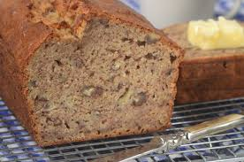

La Receta de pan de plàntanas es muy divertita y fàcil. Es una receta
de mi madre y se puede poner otras cosas en la pan de plàntanas tambièn

Los Ingredients:
- un poco de sal
- harina
- polvo para hornear
- bicarbonato
- cinimón
- Plàntanas
- azucar
- huevos
- vanilla
- leche
- tapatas chocolates (opcionàl)
- matequila
El procedimiento:
- Se pone la matequila en la sartèn
- Hay que echer la harina, la sal, la cinimón, la bicarbonato, y la polvo para hornear en un bol.
- Los bates
- Tienes que pelar los plàntanas
- Se echa la leche en un bol nuevo
- Hay que poner los huevos, vanilla, azucar, y topotos chocolates si queires tambièn.
- Bates las plàntanas y las pones en la bol col la leche
- Tienes que mezcalar los dos bols y poner todos en la sartèn
- Se cocina